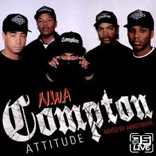

O'Shea Jackson Sr., conocido artísticamente como Ice Cube, nació el 15 de junio de 1969 en Los Ángeles, California. Es un rapero, actor y productor, reconocido como uno de los pioneros del gangsta rap y miembro original de N.W.A.
Desde joven mostró interés por la música y la escritura, desarrollando letras que reflejaban la vida en los barrios marginales de Los Ángeles. Su estilo agresivo y directo lo convirtió en una de las figuras más influyentes del hip-hop.
Ice Cube fue uno de los principales compositores de N.W.A, escribiendo gran parte de las letras del legendario álbum Straight Outta Compton (1988). Su contenido crudo y realista sobre la vida en los barrios populares de Los Ángeles desató controversias, pero también definió el gangsta rap.
En 1989, tras desacuerdos con el manejo financiero de N.W.A, Ice Cube dejó el grupo y lanzó su carrera en solitario. Sus álbumes AmeriKKKa’s Most Wanted (1990) y Death Certificate (1991) fueron aclamados por su fuerte contenido político y social.
Además de la música, Ice Cube incursionó en el cine, destacando en películas como Boyz n the Hood (1991) y la saga Friday. Su influencia en la cultura hip-hop se expandió más allá de la música, convirtiéndose en una figura clave del entretenimiento.
Ice Cube sigue activo en la música y el cine, manteniendo su relevancia en la cultura hip-hop. Su impacto en el gangsta rap, junto con su versatilidad en el cine y los negocios, lo convierten en una de las leyendas vivas más importantes del rap.